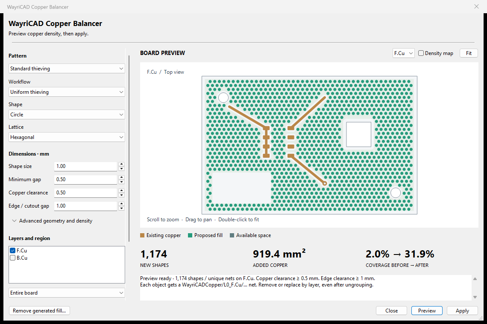

Open a saved PCB, choose a pattern and copper layers, then preview. Expand advanced geometry and density only when needed. Save the result to a new board copy.

Scroll to zoom, drag to pan, double-click to fit. The density map shows existing and proposed coverage. Targets are ceilings, not guaranteed final coverage.
Fill source zones before planning. Open the output copy, refill zones and run KiCad DRC before fabrication. The source PCB and unsaved editor state are never changed by the PCM workflow.
This engine requires native KiCad 10 Python. Set WAYRICAD_KICAD_PYTHON if discovery fails. Live IPC copper editing and KiCad 11 geometry are not supported yet.
wayricad-copper board.kicad_pcb --layer F.Cu prints a plan summary. Add --output new-board.kicad_pcb to save a new copy. Existing files cannot be replaced.